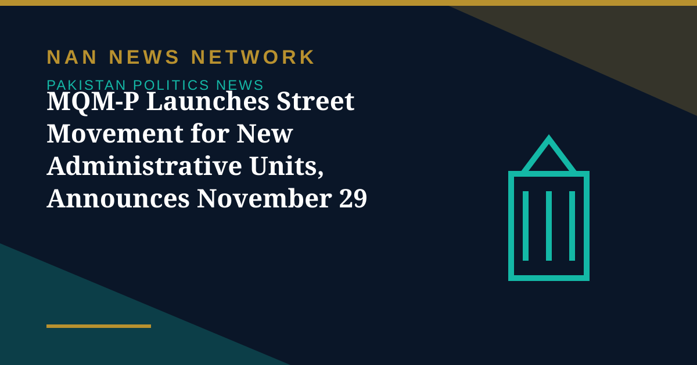

MQM-P Launches Street Movement for New Administrative Units, Announces November 29 Rally

The Muttahida Qaumi Movement-Pakistan (MQM-P) has launched a major mobilisation campaign for the creation of new administrative units, with party chairman Dr Khalid Maqbool Siddiqui announcing on Sunday a 'historic rally' on Sharea Faisal on November 29, Dawn reported on November 2.
What the party is demanding
Addressing a workers' convention at KMC Park in PIB Colony, Karachi, Dr Siddiqui — who is also the federal education minister — said the time had come for the oppressed to unite against 'an entrenched system of feudal domination and family-based politics.' He called for referendums under the Constitution to determine the will of the people on new administrative units in Sindh and the three other provinces, arguing the existing provincial structure had failed to deliver inclusive governance and equitable distribution of resources. Senior leader Dr Farooq Sattar echoed the referendum call at a District East workers' meeting.
A wider debate over provinces
The campaign lands amid a renewed national debate over restructuring the provincial system, following proposals by senior government figures for new provinces. Retired civil servants, diplomats and generals in the Roedad Khan Club warned in a statement shared with Dawn on Saturday against constitutional changes imposed without public consent, and rejected what they called hybrid governance. MQM-P leaders predicted the November 29 procession would fill roads leading to Sharea Faisal; whether the referendum demand gains traction with other parties remains to be seen.
Sources: Dawn, The Nation, November 2, 2026
More on Pakistan Politics News
- Pakistan Welcomes US Mediation Offer on Taliban Talks — With Conditions
- PTI Hits Back at Shehbaz Sharif Over KP Criticism, Demands End to Governor's Rule
- China's CPC Minister Liu Haixing Arrives in Islamabad on First Official Visit
- PPP Courts Opposition to Join 30-Member Electoral Reforms Committee
- National Assembly Unanimously Passes Workplace Harassment Resolution as Parliament Is Prorogued
- National Assembly Passes Four Government Amendment Bills by Majority Vote
- Opposition Signals Willingness to Join Electoral Reforms Committee After PPP Outreach
- National Assembly Session Suspended After Speaker Finds House Lacks Quorum
- Pakistan Proposes Parliamentary Friendship Group With Turkmenistan
- Lahore High Court Judge Mohsin Akhtar Kayani Resigns, Citing Executive Grip on Judiciary
- Pakistan Says Afghan Firing Kills One in South Waziristan Border District
- Pakistan Marks Kashmir Black Day With Rallies Across the Country
- National Assembly Passes Seven Private Members' Bills, Sends Six to Committees
- Pakistan Strongly Condemns Houthi Missile Attacks Near Makkah and Madinah
- Pakistan, Saudi Arabia and Turkiye Reported to Hold Tehran Talks on De-escalation
- Pakistan LPG Shortage Worsens as Iran Border Crossings Close
- Pakistan Ends Machine-Readable Passports and Switches Fully to E-Passports
- Pakistan Calls for a Fairer Global Order at the United Nations